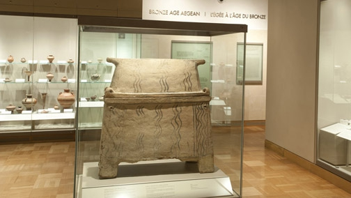

Stop 1. Bronze Age Aegean Larnax

The larnax, a Bronze Age Aegean coffin
Galleries of the Bronze Age Aegean and Geometric Greece
Level 3
A larnax is a coffin that was used by the Minoans to bury their dead. This larnax dates back to the Late Minoan period (1300 BCE) and is the only one on display in Canada.
Cool Fact
The wavy lines painted on the larnax symbolize the sea or body of water the deceased's soul would have had to travel to get to the afterlife.